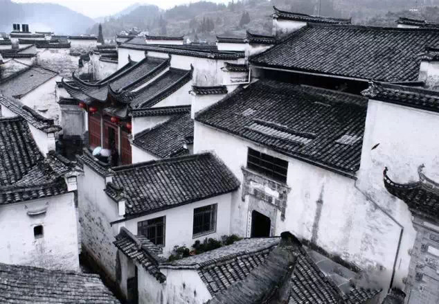
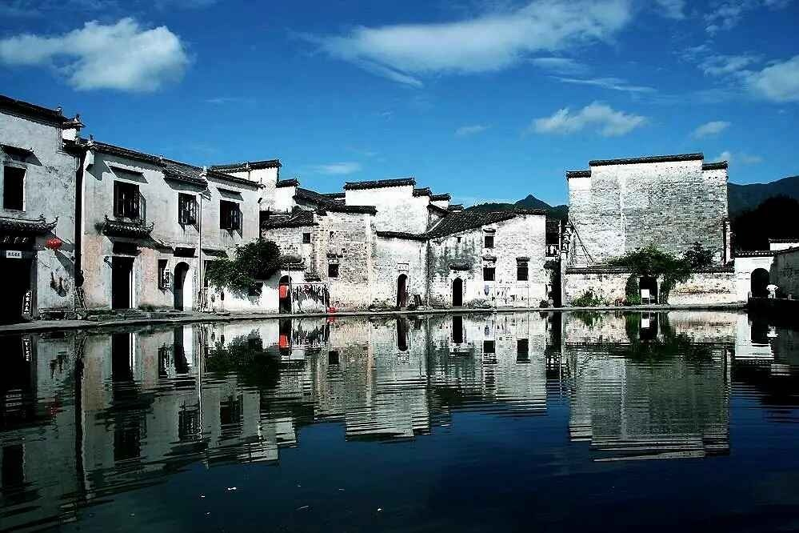
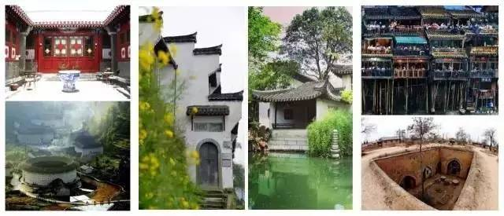
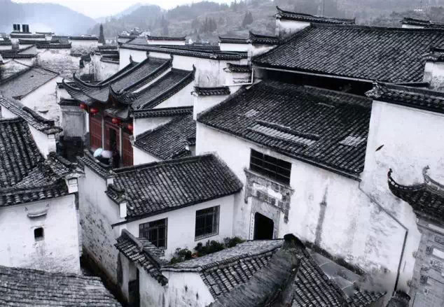
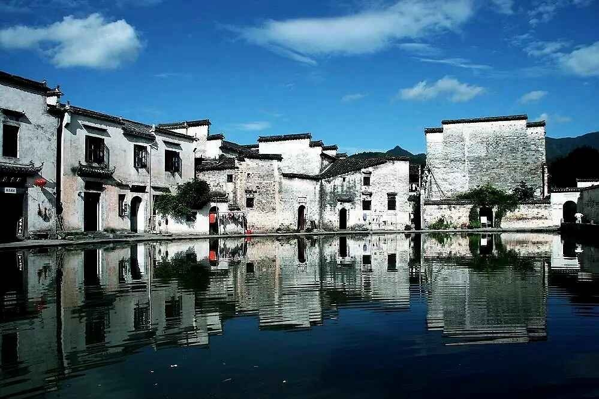
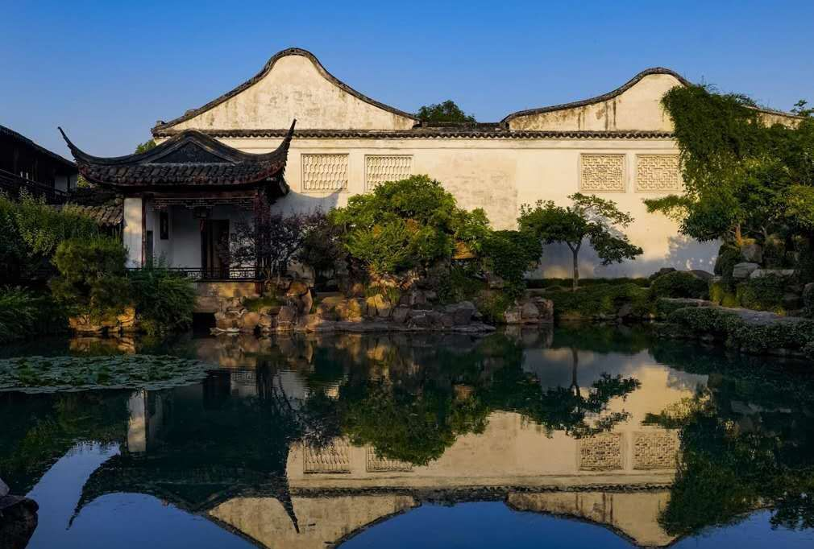
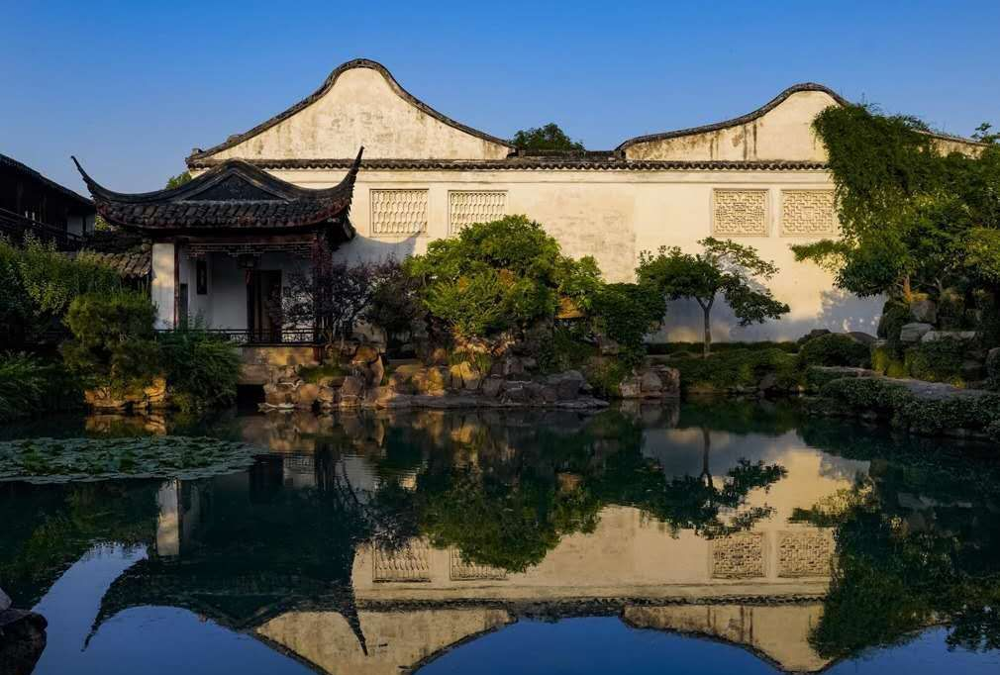
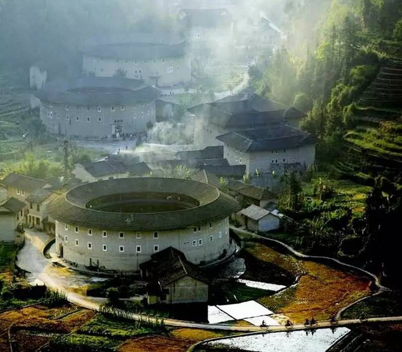
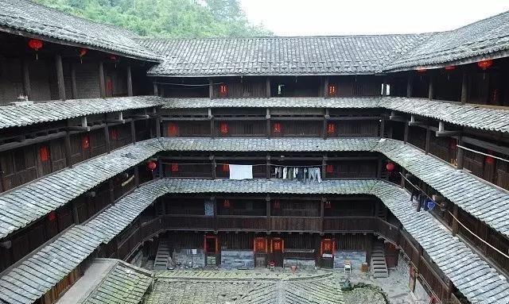

皖派建筑
皖派建筑以青瓦白墙、砖雕门楼为特点，尊贵而优雅。其中徽派是最为人熟悉的皖派的一支，民居、祠堂和牌坊是其典型代表。徽派建筑讲究布局对称，马头墙起伏变化，精美的木雕、石雕和砖雕装饰，反映出古徽州地区的文化特色和审美趋向。
 中国传统的建筑风格是中华文明的重要组成部分，它们不仅体现了古人的建筑智慧，还承载着深厚的历史文化内涵。从北方的京派建筑到南方的徽派建筑，从西部的川派建筑到东部的苏派建筑，各地的建筑风格各异，展现了中华民族在不同地理环境、历史背景和社会文化下的独特创造。这些风格各异的建筑，无论是宫殿、庙宇、园林，还是民居、祠堂、牌坊，都以其精美的设计、精湛的工艺和深刻的文化寓意，成为了世界建筑史上的瑰宝。
皖派建筑以青瓦白墙、砖雕门楼为特点，尊贵而优雅。其中徽派是最为人熟悉的皖派的一支，民居、祠堂和牌坊是其典型代表。徽派建筑讲究布局对称，马头墙起伏变化，精美的木雕、石雕和砖雕装饰，反映出古徽州地区的文化特色和审美趋向。
 苏派建筑以山环水绕、曲径通幽为特点，园林式布局是其显著特征。苏州园林是其典型代表，充满了江南水乡古朴沉静的意味。苏派建筑注重与自然环境的和谐共生，小巧玲珑，精致优雅，亭台楼阁、假山池沼、花木草石布局精妙，体现了“虽由人作，宛自天开”的园林艺术境界。
 

闽派建筑以土楼防御功能著称，其中“土楼”是其最为鲜明的代表，是一种供聚族而居、且具有防御性能的民居建筑。土楼以生土为主要建筑材料，巧妙地利用了当地的土壤资源，建筑形式独特，布局合理，结构稳固，体现了古代汉族人民的智慧和创造力。
 京派建筑以对称分布、如意吉祥为特点，四合院是其典型代表。北京的四合院，院落宽绰疏朗，四面房屋独立，是北方文化的无价之宝。四合院的建筑布局严谨，中轴对称，内外分明，体现了中国古代社会的家族观念和礼制文化，同时也考虑了居住的舒适性和实用性。


晋派建筑以窑洞、晋商文化为特点，斗拱飞檐，彩饰金装，砖瓦磨合，城楼细做，展现出晋商的稳重大气，严谨深沉。晋派建筑多采用石材和砖木结构，建筑风格古朴典雅，装饰艺术丰富多彩，反映了晋商的财富和地位，同时也表现了山西地区的历史文化底蕴。


川派建筑以其独特的少数民族特色而著称，是巴楚文化的重要体现。这种风格融合了四川、云南、贵州等地多民族的文化精髓，其中最具代表性的包括傣族竹楼、侗族鼓楼以及川西吊脚楼，每一种都承载着丰富的历史文化和生活智慧。
傣族竹楼： 傣族人民根据当地的自然条件创造了独具特色的竹楼。这些干栏式建筑主要使用竹子建造，下层高约七八尺，通常不设墙壁，便于通风防潮，并且可以用来拴养牲畜。上层设有露台及卧室等生活空间，中央设有一个火塘，象征着家庭温暖与团结的核心。

侗族鼓楼： 侗族鼓楼是侗乡内具有标志性的建筑之一，它们高耸于村落之中，不仅是村寨的精神中心，也是举办重要活动的场所。鼓楼结构复杂精美，外形呈宝塔状，装饰有精美的彩绘或雕塑，展现了侗族人民的艺术才能和对美好生活的向往。

川西吊脚楼： 吊脚楼是一种半干栏式建筑，依山傍水就势而建，既适应了山区复杂的地形，也解决了潮湿环境下的居住问题。其设计中包含了“丝檐”和宽大的“走栏”，不仅美观而且实用，体现了当地居民对自然环境的巧妙利用和对居住舒适度的追求。

通过这些建筑形式，我们可以看到川派建筑是如何将美学与实用性相结合，以适应特定地理环境的方式展现出来的。它们不仅仅是建筑物本身，更是中国西南地区丰富多元民族文化交融的生动见证。